[Docker]
도커 볼륨
1) 컨테이너 레이어
이미지로 컨테이너를 생성하면 이미지는 읽기 전용이 된다.
컨테이너 안에서 활용한 변경정보는 컨테이너 레이어 라는 곳에 기록된다.
예) mysql 의 DB 저장 데이터는 컨테이너 레이어 공간에 저장됨
[ 컨테이너 레이어(읽기 쓰기) ]
[ 이미지 (읽기 전용) ]
하지만 컨테이너 레이어의 데이터는 컨테이너 삭제와 함께 삭제되어 복구 불가능함.
# 도커 볼륨 확인
간단한 실습으로, centos7과 mysql 컨테이너를 생성해 둘의 볼륨을 확인해 본다.
도커 볼륨 확인 명령어로 확인.
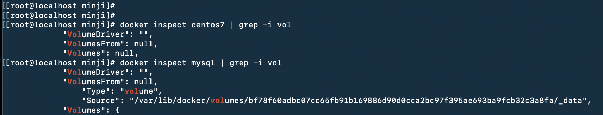
mysql 은 볼륨이 있지만, centos7은 볼륨이 없는 것 확인.
이유는 생각해보자 !!
2) 볼륨 활용 방법 컨테이너 데이터를 영구적으로 보관 가능
2) 볼륨 활용 방법
컨테이너 데이터를 영구적으로 보관 가능
(1) 호스트 볼륨 공유
호스트와 저장장소를 공유.
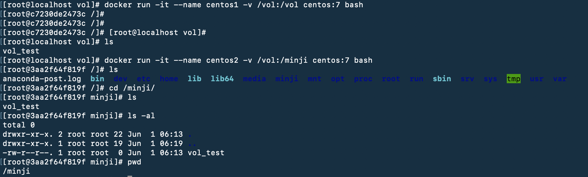
# 실습
(2) 볼륨 컨테이너
데이터 저장용 컨테이너.
-v 옵션으로 볼륨을 사용하는 컨테이너를 다른 컨테이너와 공유.
컨테이너 생성시 --volumes-from 옵션을 사용하면 -v 옵션이 적용된 컨테이너의 볼륨 디렉토리를 공유할 수 있다.
모든 데이터가 이 볼륨 컨테이너에 저장되는 것.
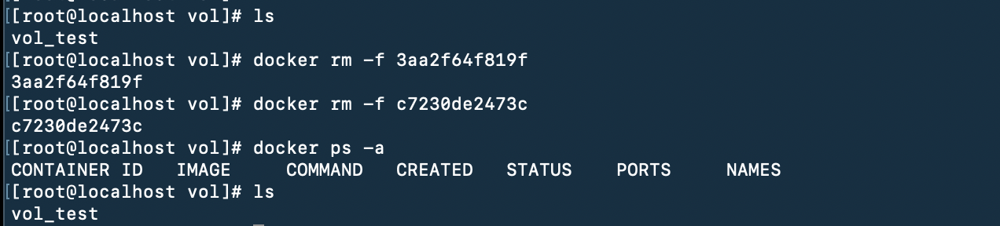
(3) 도커가 관리하는 볼륨
docker volume 명령어를 이용하여, 도커 자체에서 제공하는 볼륨 기능을 활용해 데이터를 보존 가능.
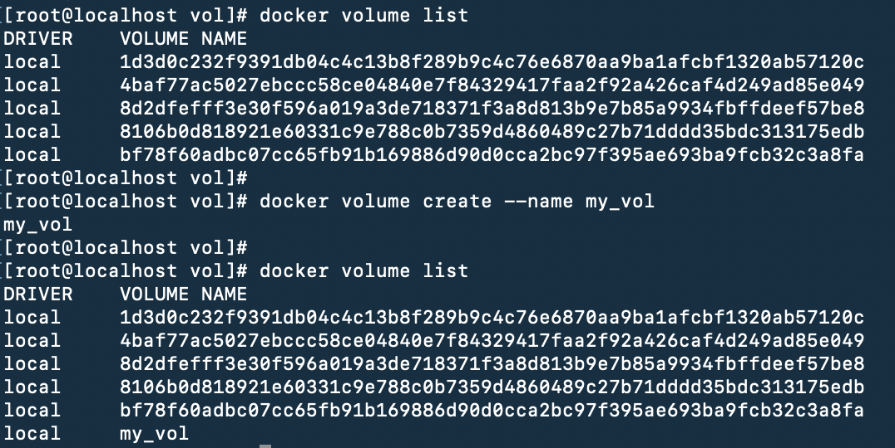
볼륨 생성
centos3 생성
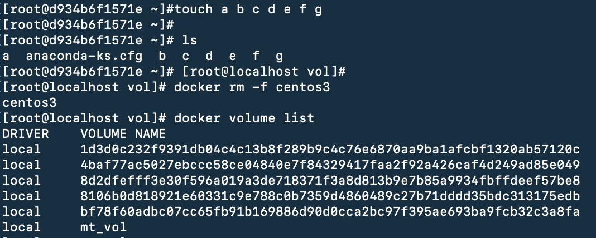
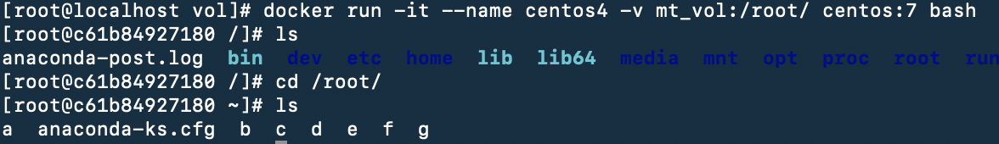
* * stateless vs stateful :
stateless : 컨테이너가 아닌 외부에 데이터를 저장하고 컨테이너는 그 데이터로 동작하도록 설계 방식.
stateful : 컨테이너가 데이터를 저장하는 설계방식.
# 볼륨 전체 삭제 명령어
# 볼륨 실습
1. 이미지 만들기
2. 이미지로 컨테이너 만들기
3. 컨테이너 안에 파일이 잘 있나 확인 하기
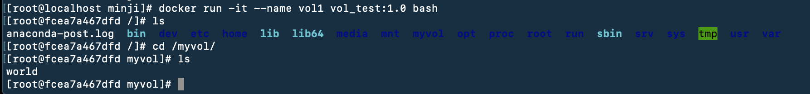
4. 호스트 pc에서 도커 볼륨 확인하기
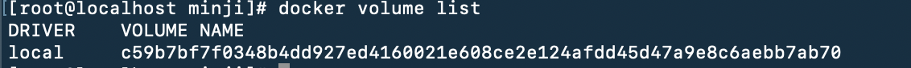
5. 컨테이너 삭제해보기
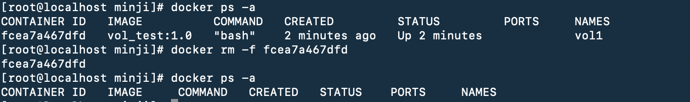
6. 도커볼륨 남아있나 확인해보기
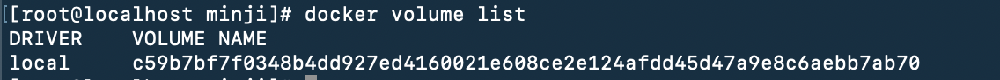
7. 다른 이미지로 컨테이너 생성할 때 남아있던 볼륨으로 연결해서 컨테이서 생성하기
8. 새로 생성한 컨테이너에 접솟에서 이전의 파일이 남아 있나 확인.
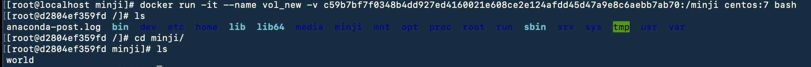
있넹!